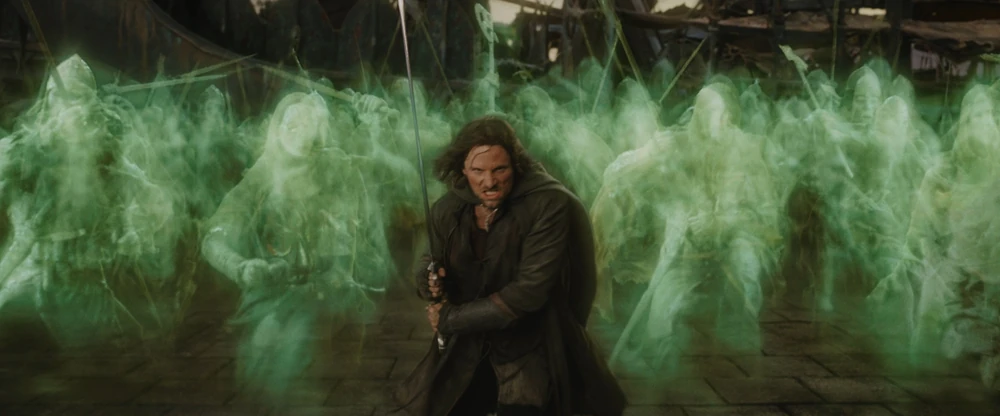
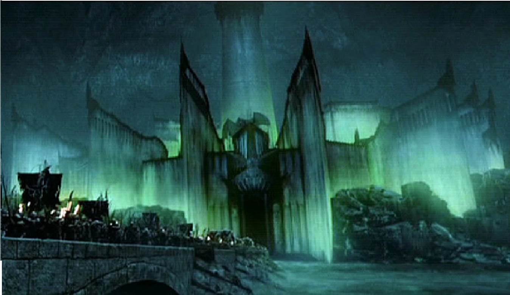

Bilbo Baggins:
Bilbo Baggins was a Hobbit of the Shire, the main protagonist of The Hobbit and a secondary character in The Lord of the Rings. He in 1.24 m tall. Bilbo Baggins was born on September 22 by Shire Reckoning (around September 12-14 of our calendar), in the year 2890 of the Third Age. He was the only son of Bungo Baggins and Belladonna Took.
In Hobbiton, Bungo Baggins constructed a spacious and luxurious Hobbit-hole for Belladonna, which they named Bag End. The family moved to their new home, where Bilbo would spend much of his life. As a young Hobbit, Bilbo was curious and eager for news of the outside world. The Istar wizard, Gandalf, took interest in this unusual quality in Bilbo during his visits to the Shire. Bilbo would later remember Gandalf's fireworks in the dwelling of his mother's family at Great Smials. Bilbo apparently practiced his rock-throwing skills in his youth so much, that birds and squirrels fled the area whenever he bent down to pick up a rock.
In the year TA 2941, Bilbo, at the age of 50, was visited by Gandalf, whom he had not seen for quite some time, outside his home at Bag End. Gandalf invited Bilbo on an unspecified adventure, which was flatly refused by the hobbit, who bade the wizard a "Good morning", and went inside. Undeterred, Gandalf continued in his plan, sending thirteen Dwarves, led by Thorin Oakenshield, to Bag End the very day. These Dwarves, needing an additional member for their company, initially came by pairs, and lastly with Gandalf, who had himself selected Bilbo as the best person for the Dwarves' job. The Dwarves explained to Bilbo their background and purpose; that they were among the Dwarves of Erebor who had been forced from the Lonely Mountain when the dragon Smaug attacked and taken up residence there. They now had determined to reclaim the mountain and needed a "burglar" to help them in situations requiring stealth. Bilbo reluctantly agreed to go, and the next morning they set off from the Green Dragon Inn.
Then they had many adventures until they reached Rivendell, the secret elf's valley where they discovered a secret message insidetheir map. Elrond found Moon-letters that spoke of the Side-door of Erebor, which read: Stand by the grey stone when the thrush knocks and the setting sun with the last light of Durin's Day will shine upon the keyhole. During their visit, Bilbo met Lord Elrond, and became enchanted with the Elves.
Bilbo and his companions then traveled from Rivendell and made their way to the High Pass of the Misty Mountains, where they witnessed the distant thunder-battle of giants. It was here the company, after taking shelter in what they took to be a simple cave, were captured by Goblins and taken to Goblin-town. With Gandalf's help, they escaped from the Great Goblin and his servants. Dori, however, who was carrying Bilbo, was grabbed from behind by a goblin, and in the ensuing struggle Bilbo lost consciousness and was inadvertently left by his companions.
Coming to and finding himself alone, Bilbo crawled his way through the pitch-black tunnel, using his hobbit nose to gain a sense of direction. He eventually stumbled upon a small Ring, but thought nothing of it, and put it in his back pocket. Although he did not know it, this lost trinket was the One Ring, forged by the Dark Lord Sauron thousands of years ago. Bilbo soon encountered Gollum, who had been in possession of the Ring for over five hundred years. The two challenged each other to a riddle-game with the condition that Gollum would show the way out if Bilbo won.
Bilbo won but Gollum tried to kill him with the help of the Ring. Realizing it was gone, he suspected that Bilbo had stolen It from him and chased him through the tunels without realizing he was behind him with the Ring on. This way, he lead him outside. Bilbo was soon reunited with his companions. Bilbo and the travelers had stopped for the night when orcs and a pack of Wargs found them near a patch of pine trees. The Dwarves, Bilbo, and Gandalf climbed up the trees to escape, but the orcs were not going to leave without killing them. They started to burn the trees down. The chief wolf was ordering the other wargs around when Gandalf picked up a pinecone, and with his magic set it ablaze in a green fire. He threw it down hitting the chieftain. It rolled around on the ground burning while Gandalf threw more and more pinecones down. The goblins and wargs fled and the group was rescued by the Great Eagles.
The group traveled to Beorn's house where they rested, after being gruffly taken in by Beorn and his animal servants. Beorn learned their story and gave a large number of provisions to help their quest. Beorn also lent several ponies to be used until the group reached Mirkwood. However, Beorn did not fully trust the Dwarves, so Bilbo saw Beorn giving careful watch to see that his ponies were unharmed. When the company arrived at the Forest Gate the ponies were let go (to several of the Dwarves discontent) and Gandalf left the group as well, warning them, "Do not stray off the path."
Inside the forest they tried to follow the path, but when the provisions ran out they went towards a fire and fell asleep. Then Bilbo discovered his companions were captured by great spiders. Bilbo was forced to find his lost companions and cut through the cocoons the spiders had formed around his companions. He distracted the spiders by improvising several insulting songs to irritate them, and succeeded when the creatures left their domain to find the intruder and eat him. Bilbo killed a few by throwing stones at them and by stabbing them with Sting. The spiders never found him, since during this time Bilbo made use of the Ring to remain invisible. After freeing the Dwarves, he led them into a charge against the spiders, where the company killed dozens of the arachnids.
They were then taken prisioners of the Elves, but Bilbo avoided it by using the Ring. Eventually Bilbo was able to rescue the Dwarves by stealing the chief of the guard's keys, and found a way for the company to escape the Woodland Realm by stowing away in a number of empty barrels, which periodically were taken by the Elves down the Forest River to Lake-town for trading purposes. The plan worked, and soon they all arrived at Lake-town, which they found to be a small town occupied by Men that Smaug would sometimes attack, though he had not been seen in many years.

Before long Thorin's company departed Lake-town, and crossing the river, followed Thrór's Map to the location of the Side-door before the end of Durin's Day. Upon discovering the keyhole, the door was opened and Bilbo was sent in alone in order to scout ahead and perhaps to steal some treasure from Smaug. When he arrived in the treasure chamber, however, Smaug was awake and sensed his presence, and so Bilbo put on the ring to avoid being seen.
Smaug, though unable to see the hobbit, tried to figure out who or what the intruder was, but Bilbo refused to tell the dragon his true identity, answering Smaug's questions only in riddles. While invisible, Bilbo noticed that Smaug had a bare spot on his jewel-encrusted underbelly. Finally, Bilbo removed the ring and Smaug saw that he had stolen a cup, causing him to go into a terrible rage. After Bilbo made it out of Smaug's lair safely, he convinced Thorin and the other Dwarves to enter the side-door and close it behind them, which saved their lives when Smaug left the mountain, and flying to the side-door, scorched the surrounding area. Foiled, the dragon flew off to Lake-town with the intent to destroy it once and for all.
Bilbo afterwards relayed to the Dwarves what he had learned, but a thrush, hearing the information, flew to Lake-town and told Bard, a descendant of the Men of Dale, of Smaug's weakness. On Smaug's arrival, Bard shot the Black Arrow at the bare spot, killing Smaug and sending him to rot at the bottom of the lake, but destroying most of Lake-town.
In the meantime, Thorin and company had reclaimed the Lonely Mountain, though Bilbo, having found the Arkenstone that Thorin greatly desired, kept it secret from the Dwarf. They were informed by Roäc, an old raven of the mountain, of Smaug's death in Lake-town, but quickly the Dwarves' mirth was dampened by the news that the surviving Men of Lake-town and the Elven-king's army were marching to the mountain to reclaim their wealth. Thorin, suspicious of the armies, refused to make any deal, with them at their arrival, and barricaded the mountain, thus beginning a siege.
Bilbo, hoping to avoid conflict, took the Arkenstone to Bard and Thranduil, in order for them to barter their share of the treasure with. Despite Bard and the Elvenking's offers for the hobbit to stay with them for the time being, Bilbo decided to return to the mountain. Thorin, on soon afterwards discovering Bilbo's perceived treachery, was furious and banished the hobbit from the mountain.
Bilbo stayed with Gandalf and Bard for a short time, until Dwarves from the Iron Hills, led by Dáin Ironfoot, arrived to aid Thorin's cause. However, shortly following this, a great army of goblins, led by Bolg, attacked, forcing the Dwarves, Elves, and Men to fight together to both defend the mountain and survive. This became known as the Battle of Five Armies, and though the goblins were defeated, Thorin and his nephews Fíli and Kíli were mortally wounded. Beorn, chieftain of the Beornings, who had joined the fight, slew Bolg along with his bodyguard and carried Thorin to safety. Bilbo only witnessed part of the battle, as he was rendered unconscious early on, and wearing the ring, lay undiscovered until he came to following the battle's conclusion. Thorin praised Bilbo and apologized to him for cursing him earlier, and thereafter passed away.
After Thorin's funeral, the new king Dáin II offered him his one-fourteenth share of the treasure, but Bilbo declined, receiving only two small chests, one with gold, and the other laden with silver. He then traveled back with Gandalf to the Shire. They dug up some of the buried treasure the Dwarves had buried earlier, most of which Bilbo offered to Gandalf to use to aid the peoples of Middle-earth. When they at last came to the borders of the Shire, the two parted, with Gandalf going his own way.

Although Bilbo returned safely to Bag End with his reward and lived in relative comfort, Bilbo’s life was not quite the same as it had once been. His sudden return after having been thought dead lost him some of the neighbors’ respect and he was later thought of as an oddity, and there were many talks and false rumors circulated about his affairs and doings.
Bilbo was very generous with his money and most people were willing to forgive him for his oddities. He had many friends especially amongst the Gamgees whom he consulted frequently on landscaping and on the growing of vegetables. His good friend the Gaffer even allowed him to tutor his son Samwise Gamgee. Bilbo taught him to read and write, and at some point taught him various bits of poetry and told him tales of the elder days. Yet, he slowly began to become weary of his settled and sheltered life at Bag End.
Bilbo was the bearer of the One Ring for six decades, ignorant of its significance. However, by TA 3001, the Ring had begun to affect him. He did not appear to have aged at all, although he felt older and thin inside. He decided that he wanted to partake in one more adventure before he found a place to settle down and finish his account of the Quest for the Lonely Mountain.
On September 22, a farewell Birthday Party was held in his honor, where he announced his intention to leave the Shire, to the shock of his family and friends. Immediately afterward, he put on his Ring and disappeared, as a joke on his neighbors. He returned to his house where he was confronted by his friend Gandalf, who tried to persuade him to leave the Ring for Frodo. After a discusion he finally left It behind becoming the first Ring-bearer to give up the ring of his own will.
Between TA 3003 and TA 3018, Bilbo worked on the written account of his adventures, in a book that would later be known as the Red Book of Westmarch. On September 22, 3021, Bilbo turned 131 and became the oldest hobbit ever to have lived. Since Bilbo had been a ring-bearer, he was allowed to accompany Frodo to the Undying Lands. On September 29, he, Gandalf, Elrond, Galadriel, and Frodo boarded a ship docked at the Grey Havens and sailed away from Middle-earth. His fate afterward is not known but as he too was a mortal being, he most likely died in the light of the Blessed Realm of Valinor.
Frodo Baggins:

Frodo Baggins, son of Drogo Baggins, was a hobbit of the Shire in the late Third Age. He is 1.24 m tall. Much of Frodo's youth was spent at Brandy Hall in Buckland, the ancestral home of the Brandybuck family, including his mother (Primula Brandybuck). Frodo was known as something of a rascal, befriending Meriadoc (Merry) Brandybuck and Peregrin (Pippin) Took and causing trouble wherever they went. They would often steal mushrooms from Farmer Maggot's farm Bamfurlong.
In TA 2980, when Frodo was only 12 years old, his parents drowned in a boating accident on the Brandywine River. An only child, Frodo stayed in Brandy Hall until his 99-year-old "uncle" Bilbo, his father's second cousin, adopted him in TA 2989. Bilbo took Frodo to live with him in his home at Bag End and made him his heir. The two grew very close in the following years; Frodo, treated by his adopted guardian as he were his own son, learned much of the Elvish language during his time with Bilbo, as well as much of the lore of Middle-earth. They also had a weekly tradition of taking long walking trips together from Hobbiton to Michel Delving and Buckland; all throughout the Shire. The two shared the same birthday.
Before departing for his journey to Rivendell, Bilbo was persuaded by Gandalf to voluntarily surrender the One Ring. Bilbo left it on the fireplace mantel with a note for Frodo, who would now become the next Ring-bearer.
Gandalf advised the young hobbit against the using the Ring. For the next seventeen years, Frodo complied with the wizard's request and hid the Ring in a safe place. However, on April 12, 3018, Gandalf returned to Bag End and warned Frodo that the Ring was actually the One Ring, which the Dark Lord Sauron needed to rule over Middle-earth. Realizing that Sauron would be looking for the Ring, Gandalf advised the Hobbit to secretly follow Bilbo's journey to Rivendell.
Merry helped Frodo to purchase a small house at Crickhollow. With the exception of his gardener Sam Gamgee, who had agreed to accompany him to Rivendell, Frodo told the other Hobbits of the Shire that he intended to move to Buckland.Frodo left from Bag End, taking with him Sam and Pippin. They left in the early morning for Bree, and just in time, as Sauron's most powerful servants, the nine Nazgûl, had entered the Shire dressed as Black Riders searching for a hobbit with the name of Baggins.
After many adventures together including their encounter with Tom Bombadil, the arrived to Bree. In Bree, the hobbits stayed at The Prancing Pony, an old inn. Frodo went by the name of Mr Underhill, attempting to raise as little suspicion as possible. When he noticed a mysteriously cloaked Man sitting in the shadows and smoking a long-stemmed pipe, Frodo asked the innkeeper, Barliman Butterbur, who the man was. The innkeeper referred to the man, a Ranger, as Strider. That night, Black Riders arrived in Bree and attacked the inn in search of Frodo and the One Ring, but Strider had managed to hide the Hobbits from them in time. Having gained their trust, Strider introduced himself as Aragorn to Frodo and the others, to whom he also revealed the backstory of the black riders, also called Nazgûl or Ringwraiths. With a pony named Bill that the Hobbits had acquired at Bree, Strider led Frodo and his companions into the Wild. Aragorn would be their guide to Rivendell, and he would lead them through the Midgewater Marshes and to the hill of Weathertop.
On the night of October the sixth, the Hobbits were attacked by five of the nine Ringwraiths at Weathertop. In the presence of the Nazgûl, Frodo made the mistake of putting on the Ring. He was able to resist their attempt to take him by drawing his sword and invoking the name of one of the Valar, Elbereth Gilthoniel. Unfortunately, the leader of the Nazgûl, the Witch-king of Angmar, stabbed Frodo in the shoulder (he would have stabbed his heart) with a Morgul-knife. If it had caught him in the heart, Frodo would have become like the Nazgûl, only weaker and under their control. The Ringwraiths were driven away by the appearance of Aragorn and his martial skill; also because he had torches, one of their few weaknesses.
A fragment of the Ringwraith's blade remained in Frodo's flesh, where it continued to move towards his heart. Near death (or worse), Frodo was rescued by Glorfindel, an Elf-lord, who put the injured Hobbit upon his horse Asfaloth. They were found and pursued by the Nazgûl, as Glorfindel rode and bore Frodo swiftly to the Ford of Bruinen, at the entrance to the valley of Rivendell. Once they had crossed the River Bruinen, the Nine Ringwraiths behind them demanded Frodo give up the Ring, but Frodo refused. Subsequently, the Ringwraiths entered the river and were washed away in a flood called up by Elrond.
Frodo was soon healed in Rivendell by Elrond, who knew the wound would not ultimately leave him, as it was both spiritual and physical. On the 24th of October 3018, Frodo awoke in Rivendell and was reunited with Bilbo, Gandalf, Aragorn, Sam, Merry, and Pippin. Although Elrond had healed his wound, it continued to ail him yearly for as long as he lived in Middle-earth.

After his healing, Frodo was summoned to a great Council that Elrond had organized. Representatives of all the Free Peoples of Middle-earth discussed the history of the Rings of Power and decided that the One Ring must be destroyed. As the Ring was shown and tempers flared, argument broke out as to who should carry the Ring on this mission, until Frodo bravely volunteered to take the Ring to Mordor and cast it into the fires of Mount Doom. A member of each of the Free Peoples offered to join Frodo in his quest, thus forming the Fellowship of the Ring. The Fellowship consisted of Frodo, Samwise, Merry, Pippin, Aragorn, Gandalf, Boromir of Gondor, Legolas of the Woodland Realm, and Gimli of the Lonely Mountain.
Before leaving Rivendell, Bilbo gave Frodo his dwarf-made coat of mithril mail and his elven blade Sting. The mithril coat had been given to Bilbo by Thorin Oakenshield during the events of The Hobbit, and Sting had been taken by Bilbo from a troll den. On December 25, the Fellowship of the Ring departed from Rivendell and headed south.
After an attack by White Wolves in Eregion, on January 11, 3019, the Fellowship attempted to cross the Misty Mountains (specifically the Pass of Caradhras), but were unable to due to a snowstorm. They instead traveled through the underground city of Moria at the urging of Gimli. After solving the riddle to enter, they continued their path, but were attacked by orcs, goblins and a cave troll. Frodo was stabed but the mithril coat saved him. They then run to the bridge of Khazad-dum, in which Gandalf fell fighting the Balrog.
Deeply grieved by their loss, the Fellowship journeyed to the Elven kingdom of Lothlórien, where they met the Lady Galadriel and Lord Celeborn. Galadriel showed Frodo a vision of the future in her Mirror. Frodo offered her the One Ring, but she resisted the temptation to take it, passing the test that was laid before her, and accepting the diminishing of the power of the Elves. Before the Fellowship departed from Lothlórien, Galadriel gave each member a gift. To Frodo, she gave a phial with the light of the star Eärendil captured inside; this gift would prove hugely important later on in the quest. They were also provided with elven way-bread, other supplies, and boats for their voyage down the Anduin River.

The Fellowship continued their journey south to Parth Galen. There, Boromir, a Man of Gondor and a member of the Fellowship, attempted to convince Frodo to bring the Ring to Minas Tirith and regroup from there. When the hobbit asked for an hour alone to consider his options, Boromir followed him. Seeing that Frodo did not intend to take the suggested course of action, Boromir tried to take the Ring from him by force. Frodo scaped putting on the Ring.
Taking off the Ring, he decided to take the item to Mordor alone, without telling the other members of the Fellowship. However, he was joined by his friend Samwise Gamgee, who felt it was necessary that he should protect and guide Frodo. Frodo gave in to Sam's protests, and although reluctant to lead anyone else to his fate, was glad to have Sam's company.
The two hobbits continued toward Mordor, dividing the Fellowship. After leaving what remained of the Fellowship at Amon Hen, Frodo and Sam tried to navigate through the winding paths and razor sharp rocks of the Emyn Muil. After getting lost several times, they were found by Gollum, who at first tried to take the One Ring, but was captured by Sam (with Frodo's help) and tied up with the Elven rope. Frodo, now pitying the creature, decided not to slay Gollum, but forced him to swear an oath of servitude to the master of the precious. Gollum then led them out of the maze and into the Dead Marshes.
Gollum led Frodo and Sam on a safe pathway through the marshes, warning them not to follow what seemed like small torches in the water. Gollum led the two Hobbits to the Black Gate of Mordor, as Frodo had desired, but stopped the Hobbits from passing its doors, as the danger was too great. He then explained about a secret way into Mordor, 'Up the stairs and through the tunnel'. The Hobbits once again found themselves being led by Gollum.
After venturing into Ithilien, and witnessing a skirmish between a company of Haradrim warriors (along with Oliphaunts) and Rangers from Gondor, they were apprehended by the Ranger's captain, Faramir. When the skirmish had ended, Faramir blindfolded the ring-bearer and his companions and led them to Henneth Annûn, the Window on the West. Upon much interrogation, Sam foolishly misspoke, and gave away that Frodo was indeed carrying the One Ring. Realizing the importance of the quest, Faramir proved his quality, unlike his brother, Boromir, and let the Ring-bearer go free, resupplying the hobbits with food for their journey. Later, Gollum was captured in the Forbidden Pool and forcibly taken into the hidden lair. Frodo begged for his safety, and he was not killed, although the rift between master and servant had once again begun to open.
Gollum led the hobbits past the lair of the Witch-king of Angmar, Minas Morgul, and up the Stairs of Cirith Ungol into 'The Tunnel'. When they arrived at the top though, they were abandoned by Gollum. They cautiously traveled through the tunnel, and managed to get to the end only to find their way barred by Shelob's great web. Whilst attempting to cut through the webbing, Frodo bravely stood up to Shelob and forced her back further into the tunnels giving him and Sam time enough to hack through the threads and escape. Upon escaping the tunnels, Frodo thought himself safe; however, Shelob, through one of her many tunnels, managed to sneak out and jab him with her stinger.
As he was being encased in Shelob's webbing, Sam was able to draw her into single combat wherein he, using Sting and the Phial of Galadriel, was able to mortally wound her and drive her back into her caves. Sam took the Ring from around Frodo's neck upon hearing Orcish voices, and hid behind some nearby rocks. He overheard the Orcs speaking of Frodo, and Sam realized that his master was not dead, but merely paralyzed. Frodo was then taken to the Tower of Cirith Ungol to await further torture and questioning.
Frodo was taken to the utmost top of the tower and imprisoned. He was stripped of all his clothes and all the things he carried. Squabbling over his mithril vest, fighting broke out amongst the two lead Orcs and their battalions, killing almost all the Orcs and Uruks in the tower. Sam rescued Frodo and they entered Mordor.
Frodo and Sam crawled onward through the empty plains of Mordor, as the Orcs had been sent to the Black Gate to stop the Men of the West's army, and, after falling in and out of a company of Orcs, started to climb Mount Doom. They journeyed on for many days with hardly any food or water, and Frodo became progressively weaker as the Ring's power over him grew the closer they came to Orodruin. Frodo was eventually unable to go on, and Sam was forced to carry him a fair distance while his master rested upon his back. It was then that Gollum reappeared, and after a brief struggle, Sam cut Gollum in the stomach, and Frodo fled up the mountain.

Inside the Cracks of Doom, Frodo finally had the chance to destroy the Ring, and rid himself of his burden, but the power of the Ring was at its strongest due to it being in the place of it's making. It was here that Frodo finally yielded to the temptation and power of the Ring. Sam yelled for Frodo to destroy the Ring, but Frodo was overcome by its power and claimed the Ring for himself. Gollum attacked Sam, who fell and hit his head on a rock, temporarily knocking him unconscious. When he came to he saw Gollum fighting with an unseen foe (Frodo, having put on the Ring). Then Gollum bit off Frodo's finger, Ring and all, and was reunited with his treasure for a short time, until dancing with joy he toppled off the brink and fell into the depths, destroying himself and the One Ring.
The two hobbits tried to escape as the volcano erupted. Just as it looked as though they were doomed, Gwaihir the Lord of Eagles saw them, and with his Eagle companions Landroval and Meneldor rescued Sam and Frodo and flew them to safety.
After recovering at the Field of Cormallen and witnessing the crowning of Aragorn as King Elessar, Frodo, Sam, Merry, and Pippin all returned to the Shire. In the films they lived happily, but in the books they discovered it under the control of an individual named Sharkey (later revealed to be Saruman) and his forces. They had to overtrow him.

Following the Scouring of the Shire and end of the War of the Ring in November, Frodo went on to serve as Deputy Mayor of the Shire. During his brief tenure of six months, he helped lead the rebuilding of the Shire, but soon realized that he still bore the wounds of his quest. On May 1st, TA 3020, Frodo attended the wedding of his best friend Sam and his wife Rosie Cotton and they moved in with him at Bag End. On mid-years day later that year, Frodo retired from his post as Deputy Mayor, letting the office revert to Will Whitfoot, who Frodo held place for as he recovered from his wounds and imprisonment by Saruman.
Frodo also wrote his own story "The Lord of the Rings" along with Bilbo's "There and Back Again" in the Red Book of Westmarch. On 29 September TA 3021 (Third Age), at the age of 53, Frodo joined Bilbo, Gandalf, Elrond and Galadriel aboard an Elven ship. He was allowed passage across the sea to the Undying Lands, as he was a Ring-bearer, with the hope of healing the damage to his spirit that bearing the Ring had caused.
Samwise Gamgee:

Samwise Gamgee, known as Sam, was a hobbit of the Shire. He is 1.27 m tall. He was Frodo Baggins' gardener and best friend. Sam proved himself to be Frodo's closest and most dependable companion, the most loyal of the Fellowship of the Ring, and played a critical role in protecting Frodo and destroying the One Ring.
Sam was the youngest son of Hamfast and Bell Gamgee, and had many brothers and sisters. A gardener by trade, Sam seemed to be a simple Hobbit of plain speech. However, his love for Elves, his gift for poetry, and his belief that the world contained greater wonders than most hobbits were aware of (all nurtured by his tutor Bilbo Baggins) set him apart from the beginning.
As "punishment" for eavesdropping on Gandalf's conversation with Frodo regarding the dangers of the One Ring while trimming the grass of Bag End, Gandalf chose Sam to be Frodo's companion on his journey to Rivendell.
After leaving Bree, Sam became very close to the pony Bill. On arrival at the Doors of Durin Bill had to be set loose as he could not pass through the Mines of Moria. This caused Sam great distress. In Lothlórien Sam was given a gift by the Lady Galadriel; a small box containing soil from her garden along with a Mallorn seed.
At Amon Hen, Sam followed Frodo ofering to go with him all the way to Mount Doom, almost drowning in the process. Frodo finally accepted his help and ever since, Sam never left his side until they completed their quest.

Sam bravely fought Shelob using both the light of Earendil and Sting, Frodo's sword. He managed to severely wound Shelob in the abdomen, making her retreat to cure her wounds.
After Shelob attacked and seemingly killed Frodo, Sam took the Ring, intending to complete the quest on his own. Because he held the Ring for a time, he was considered one of the Ring-bearers and during the time he possessed it the Ring tempted him with visions of a great garden all for himself. Being humble, Sam never gave into the treacherous visions and temptations of the Ring, and returned it when he discovered Frodo alive in the Tower of Cirith Ungol. He and Bilbo were the only ones ever to have given up the Ring willingly, and only Sam surrendered it readily.
When Orcs took Frodo's body, Sam overheard one of them saying that Frodo was still alive, so he followed them into the Tower of Cirith Ungol, determined to rescue Frodo. Once there he found that competing bands of Uruks and Morgul Orcs had rioted and killed one another over the possession of Frodo's Mithril coat, thus making it easier for Sam to get to Frodo and escape the tower with him.
To rescue Frodo fron Cirith Ungol he had to fight many orcs on his way up. As he was using the Ring, the orcs saw him as a mighty warrior holding a powerful artifact and as a result were terrified of him.
Sam and Frodo made their way to Mount Doom, disguised as Orcs along the way. The way to Mount Doom was filled with fiery rocks and pillows of ash which made it almost impossible for the hobbits to pass. When Frodo collapsed from weakness, Sam carried him up the slopes of Mount Doom, only to be stopped by Gollum.
Sam delayed Gollum while Frodo continued towards the Cracks of Doom. Sam then rushed to follow Frodo, only to see Frodo renounce the quest and claim the Ring as his own, putting it on his finger. Unbeknownst to Sam, Gollum had followed in his tracks, and attacked him from behind. In the moments while Sam was dazed, Gollum attacked Frodo, and after a brief struggle took the Ring by force by biting off Frodo's finger. Gollum began to celebrate regaining the Ring, but in doing so slipped and fell to his death in the fiery chasm below, destroying the Ring in the process.
The destruction of the Ring triggered a violent upheaval of Mount Doom, but with Sam's assistance, the two hobbits escaped from Sammath Naur onto the mountainside. Though they attempted to descend, the hobbits were trapped by the issue of lava and fiery ash from the mountain. Before the fire reached them, however, Gwaihir the Lord of the Great Eagles, come at the behest of Gandalf, spotted the hobbits from afar. Landroval and Meneldor, Gwaihir's companions, rescued Sam and Frodo and flew them to the safety of Ithilien.
Some months afterwards, Sam, along with a great company including Aragorn, Gandalf, Galadriel, and the other hobbits, left Minas Tirith, traveling towards the Shire by way of Rohan, Isengard, and Rivendell. All but Gandalf left them by the time the company reached Rivendell, and from there the four hobbits returned to the Shire.
Following the Scouring of the Shire, Sam married Rose (Rosie) Cotton. They had thirteen children: Elanor the Fair, Frodo, Rose, Merry, Pippin, Goldilocks, Hamfast, Daisy, Primrose, Bilbo, Ruby, Robin, and Tolman. When Frodo Baggins announced that he was leaving to the Undying Lands, west of Middle-earth, he gave Sam the Red Book of Westmarch and Bag End where he and his large personal family, later called the Gardners, would live for many years.
After Will Whitfoot resigned his post as Mayor of Michel Delving, in SR 1427, Sam was elected Mayor of the Shire for seven consecutive seven-year terms.
After his wife died in the year 61 of the Fourth Age (SR 1482), Sam entrusted the Red Book to his daughter, Elanor, and left the Shire. It was a tradition handed down from Elanor that he went to the Grey Havens, and because he was also a Ring-bearer (albeit for a short time), he was allowed to pass over the Sea to be reunited with Frodo in the Undying Lands where they both lived together until they died.
Meriadoc Brandybuck:

Meriadoc "Merry" Brandybuck was a Hobbit of the Shire and one of Frodo Baggins cousins and closest friends. He is 1.38 m tall. He loved boats and ponies and had a great interest in the maps of Middle-earth. He was also one of the nine companions of the Fellowship of the Ring, and later became the eighth Master of Buckland.
Merry was born in TA 2982. He was the only child of Saradoc Brandybuck (TA 2940 - FO 11) the Master of Buckland, and Esmeralda Took (TA 2936 - ?), the younger sister of Paladin II Took. This made him first cousin to Paladin's son Pippin, who was also his closest friend.
Merry was often considered the most perceptive and intelligent of the hobbits, for example, knowing of the One Ring and its power even before Frodo Baggins left the Shire. He guarded Bag End after Bilbo's party, protecting Frodo from the various and often unwanted guests. He also was the force behind "the Conspiracy" of Sam, Pippin, Fredegar Bolger and himself to help Frodo. Thus, even before the Quest of the Ring began, Merry was well prepared and organized; he assembled their gear and brought ponies.
As a Brandybuck he also had a key to the gate in the High Hay. This shortcut through the Old Forest served them well, because they avoided the Black Riders and met Tom Bombadil, who helped them. At the Barrow-downs, Merry acquired his sword, a work of Westernesse, forged for the old war between Arnor and Angmar, which would prove crucial in latter events.
At Bree, he was not present in the Prancing Pony when Frodo foolishly put on the Ring; but was outside taking a walk, and was nearly killed by the Nazgûl who arrived. At Rivendell, he was seen studying maps and plotting their path. His approval to the Fellowship came with only a little less reluctance than Pippin's; they were the two selected to relay news to the people of the Shire about Frodo's journey, but in the end Gandalf, believing in the friendship and loyalty shown to Frodo and Sam, requested that Elrond allow the two hobbits to come along.
At Amon Hen he was captured along with Pippin by a band of Saruman's fighting Uruk-hai, but he made a good account for himself, and Boromir valiantly defended him, though Boromir died in the attempt.
After being captured by the Uruks, Uglúk crudely tried to bandage Merry's head wound. Despite this, a scar would remain on Merry's head forever. The Uruks then gave to them an Orc drink, which would keep the Hobbit alive during the fast march towards Isengard.
When they neared Fangorn Forest, Grishnákh began searching them, attempting to find the One Ring, which he believed they carried. Before he was able to escape with the hobbits, Éomer's éored attacked and all of the Orcs, including Grishnákh, were slain. During the confusion of the battle Merry and Pippin were able to escape into Fangorn Forest.

Escaping with Pippin into Fangorn Forest, Treebeard and the newly risen Gandalf the White met him. Along with Pippin, he drank significant amounts of Ent-draught, which contributed to speedy gains in height and hair growth. Accompanying Treebeard to the Entmoot, and later to Isengard, he and Pippin were set as guardians following Saruman's fall. It was here that Merry encountered King Théoden of Rohan, and was reunited with the remaining members of the Fellowship (save Frodo and Sam).
Separated from Pippin when Gandalf took the latter to Gondor, Merry swore fealty to Théoden and became his squire. Without permission from his liege, he rode to the Battle of the Pelennor Fields in the care of young Dernhelm (who, unbeknownst to Merry, was actually Théoden's niece Éowyn).
When the Nazgûl attacked the Riders of Rohan and Théoden was injured, Merry and Éowyn faced the Witch-king of Angmar alone. Here, Merry's companion revealed herself to be Éowyn. Battling both Fellbeast and the Nazgûl alone, Éowyn was well assisted by Merry's crucial move: his sword, was one of the few weapons able to pierce the Ringwraith's form, but at a great expense to himself. He stabbed the Witch-king behind the knee as he was about to kill Éowyn. This was enough to allow Éowyn to finish off the Witch-king.
Merry heard Théoden's last words, but went unnoticed by the honor escort of Riders and was found wandering the city by Pippin. He was saved by the healing of Aragorn and recovered fully, leaving Minas Tirith to tend to the wounded Pippin at the Field of Cormallen.
For his bravery in battle, King Éomer, as the new King of Rohan, knighted him and gave him the name of "Holdwine". During the Scouring of the Shire, he was in the forefront of the Battle of Bywater, using the Horn of Rohan presented to him by Éowyn.
Upon their return he and Pippin both married. They were also the tallest of hobbits - Meriadoc being the slightly taller of the two - taller even than the legendary Bandobras "Bullroarer" Took, due to their having drunk large amounts of Ent-draught. Merry married Estella Bolger some time after the end of the Third Age. He became the Master of Buckland in SR 1432 (FA 11), living at Brandy Hall and also Crickhollow.
He wrote Old Words and Names in the Shire. Although he was not recorded as having any children within the family trees, he had at least one son. At the age of 102, Merry returned to Rohan and Gondor with Pippin, dying there some time after the year FO 63. He was laid to rest in Gondor, and when Elessar died in FO 120, he and Pippin were entombed beside the great king.
Peregrin Took:

Peregrin Took, more commonly known as Pippin, was a hobbit of the the Shire, and one of Frodo Baggins' youngest and closest friends. He is 1.38 m tall. He was a member of the Fellowship of the Ring and, after the War of the Ring, became thirty-second Thain of the Shire.
Pippin was born to Paladin II Took and Eglantine Banks on the spring of TA 2990 (SR 1390). He was the youngest of four children and had three older sisters, Pearl, Pimpernel, and Pervinca. His father's sister, Esmeralda Took, was the mother of Meriadoc Brandybuck, thus making Pippin and Merry first cousins.
While on their way to Buckland, Frodo Baggins, Samwise Gamgee, and Peregrin Took encountered a Black Rider, who was warded off by the presence of a company of Elves, led by Gildor Inglorion. On the way to Bree, Pippin was caught up with the Barrow-wights on the Barrow-downs. After the encounter, Pippin acquired a Dagger of Westernesse. In The Prancing Pony, Frodo accidentally slipped the One Ring upon his finger, drawing the attention of the Black Riders.
Their group met a Ranger of the North, Strider. The inn was attacked by the Nazgûl at night, and the four hobbits were successfully led away by Strider, whose real name was Aragorn. Aragorn led them to Weathertop, where the group was once again attacked by the Black Riders. In haste to get an injured Frodo to Rivendell, the Elf-lord Glorfindel arrived and guided them. After the Council of Elrond, Pippin and Merry were allowed by Elrond to join the Fellowship of the Ring.
In Moria, Pippin thoughtlessly dropped a stone down a well, which roused goblins in various caverns and revealed the Fellowship's presence to them. It incurred Gandalf's wrath, and he called Pippin a "fool of a Took". The battle of the Chamber of Mazarbul followed.
In the Skirmish at Amon Hen, Pippin and Merry were protected by Boromir, who was killed in the process. The two hobbits were taken away by the Uruk-hai, mistaking them to be the Ring-bearer. On their way to Isengard, Pippin dropped the Elven-brooch he received from Lothlórien, as a sign for Aragorn, Legolas, and Gimli, who were in pursuit. When a company of the Rohirrim ambushed the Uruk-hai, Pippin and Merry were able to escape into Fangorn Forest, where they meet the Ent Treebeard.
They both drank Ent-draughts during their time in Fangorn, which increased their heights substantially. Pippin and Merry eventually befriended Treebeard and told him what had happened to them. After the Entmoot, the Ents decided to march against Isengard. Pippin and Merry were reunited with Aragorn, Legolas, Gimli, and Gandalf after Isengard's destruction.
In Orthanc, Pippin picked up Saruman's palantír, which Gríma Wormtongue threw. As he looked into the stone, Pippin had a first-hand encounter with Sauron himself, leading the Dark Lord to assume Pippin was the Ring-bearer. Gandalf and Pippin then rode on Shadowfax to Gondor, for the latter's protection from Sauron's forces. Pippin met Denethor II, the Ruling Steward of Gondor and Boromir's father. In recompense for Boromir's death, Pippin pledged his allegiance to Denethor and became a Guard of the Citadel.

While in Minas Tirith, Pippin befriended Beregond, a fellow Guard of the Citadel, his son Bergil and Faramir, Boromir's younger brother. During the Siege of Gondor, Pippin witnessed Denethor preparing a pyre in the Hallows for himself and an unconscious Faramir. Pippin quickly went out in search for Gandalf, with whom he was able to save Faramir from being burned to death. Denethor, however, burned to death in the pyre he had made.
Pippin was among the army of the West, which was led by Aragorn. They assaulted the Black Gate to divert the attention of Sauron and give Frodo enough time to destroy the Ring. In the Battle of the Black Gate, Pippin managed to kill one of the Olog-hai, a troll-race bred by Sauron, the first hobbit ever to do so. He was knocked unconscious when the troll fell on him. Gimli later recognized the Hobbit feet under the Troll and brought him to the healers, saving his life.
After his coronation, King Elessar knighted him and granted him and his fellow hobbits leave to return home, as well as leave to return to Gondor whenever they liked. Later, he, Merry, Frodo, and Sam were instrumental in overthrowing the small remainder of Saruman's forces during the Scouring of the Shire.
In the year FO 6 of the Fourth Age Pippin married Diamond of Long Cleeve, when she was 32 and he himself was 37. They had one son, Faramir Took, who later married Samwise Gamgee's daughter Goldilocks Gardner. In the year FO 13, Pippin became the 32nd Thain of the Shire, a position he held for 50 years before renouncing it in FO 63, when he revisited Rohan and Gondor with Merry.
He remained in Gondor for the rest of his life. Pippin died some time after the year FO 63 and was laid to rest with Merry in Gondor. After the great King Elessar (Aragorn) died in FO 120, Merry and Pippin were entombed next to him.
Aragorn II (Elessar):

Aragorn II, son of Arathorn II and Gilraen, also known as Elessar and Strider, was the 16th and last Chieftain of the Dúnedain of the North; later crowned King Elessar Telcontar (March 1, 2931 - FO 120), the 26th King of Arnor, 35th King of Gondor and first High King of Gondor and Arnor since the short reign of Isildur. He was 1.98 m tall. He was a great Ranger and warrior, and as Isildur's heir he bore the shards of Narsil, reforged and renamed Andúril, Flame of the West, in the Great War of the Ring.
Aragorn was a descendant of Elros Tar-Minyatur through the line of the Lords of Andúnië to Elendil, High King of Arnor and Gondor. Like all of the kings before him, he was related to Elrond through the House of Elros. His ancestor Arvedui was wedded to Fíriel, descended from Anárion, who bore their son Aranarth, making Aragorn the last descendant of both Isildur and Anárion.
When he was only two years old, his father Arathorn was killed while pursuing Orcs. Aragorn was afterwards fostered in Rivendell by Elrond. At the request of his mother, his lineage was kept secret, as she feared he would be killed like his father and grandfather if his true identity as the descendant of Elendil and Heir of Isildur became known. Aragorn was renamed "Estel" and was not told about his heritage until 2951.
Elrond revealed to "Estel" his true name and ancestry when he was twenty, and gave to him the Ring of Barahir and the Shards of Narsil. Elrond withheld the Sceptre of Annúminas from Aragorn until he "came of the right" to possess the item.
It was also around this time that Aragorn met and fell in love with Arwen, Elrond's daughter, newly returned from her mother's homeland of Lothlórien where she had been visiting her grandmother Galadriel.
Aragorn thereafter assumed his proper role as the sixteenth Chieftain of the Dúnedain and left the comforts of Rivendell for the wild, where he lived with the remainder of his people, the Rangers of the North, whose kingdom had been destroyed through division and the Angmar Wars centuries before.
Aragorn met Gandalf the Grey in 2956 and they became close friends. Heeding Gandalf's advice, Aragorn and the Rangers began to guard a small land known as the Shire inhabited by the diminutive and agrarian Hobbits, and he became known among the peoples just outside the Shire's borders as Strider.
From TA 2957 to TA 2980, Aragorn undertook great journeys, serving in the armies of King Thengel of Rohan, and Steward Ecthelion II of Gondor. Many of his tasks helped to raise morale in the West and counter the growing threat of Sauron and his allies, and he earned priceless experience which he would later put to use in the War of the Ring. Aragorn served these lords in disguise and his name in Gondor and Rohan during that time was Thorongil ("Eagle of the Star"). With a small squadron of ships from Gondor, he led an assault on the long-standing Corsair city of Umbar in 2980, burning many of the Corsairs' ships and personally slaying their lord during the battle. After the victory at Umbar, "Thorongil" left Gondor and, to the dismay of his men, went east.
Later in 2980, he visited Lothlórien, and there once again met Arwen. He gave her the heirloom of his House, the Ring of Barahir, and, on the hill of Cerin Amroth, Arwen pledged her hand to him in marriage, renouncing her Elvish lineage and accepting the Gift of Men; death.
Elrond withheld from Aragorn permission to marry his daughter until such a time as his foster son should be king of "both" Gondor and Arnor. As both Elrond and Aragorn knew, to marry a mortal, Arwen would be required to choose mortality, and thus deprive the deathless Elrond of his daughter while the world lasted. Elrond was also concerned for Arwen's own happiness, fearing that in the end she might find death (her own and that of her beloved) too difficult to bear.
Before the events of The Lord of the Rings properly take place, Aragorn traveled widely through Middle-earth, entering the Dwarven mines of Moria via the East-gate of Moria but exiting the same way. He also journeyed to Harad, where (in his own words) "the stars are strange".
In TA 3009, Gandalf grew suspicious of the origin of the Ring belonging to the Hobbit Bilbo Baggins, which later turned out to be the One Ring, the key to the Dark Lord Sauron's power. Setting a guard of Rangers on the Shire, Aragorn went at Gandalf's request into Rhovanion in search of Gollum, who had once possessed the Ring. He caught the creature in the Dead Marshes near Mordor, and brought him as a captive to Thranduil's Halls in Mirkwood, where Gandalf questioned him. Gollum, however, escaped some time later with the aid of Sauron's Orcs.
Aragorn returned with Gandalf in the spring of TA 3018, and then went away on his own journey, and was not able to help when Gandalf discovered the Nazgûl were seeking for Frodo and the Ring in the Shire. After Frodo left Hobbiton, Gildor Inglorion informed Aragorn that the Nine were looking for him and Gandalf was missing. Following them to Bree, he met Frodo at the Inn of the Prancing Pony under the name "Strider," as the Men of Bree called him. Though originally the hobbits were suspicious of him, Barliman Butterbur brought a letter from Gandalf that made them trust him. Aragorn was aged 87 at that time, nearing the prime of life for one of royal Númenórean descent.
When they themselves came to Weathertop, they discovered five of the Nazgûl had followed them, and during the later attack he fought off the Ringwraiths. After attempting to heal Frodo with athelas, he led them across the Lone-lands towards the Trollshaws. They met with the Elf-lord Glorfindel who led them to the Ford of Bruinen. When the Nazgûl caught up with them and Elrond released a flood, Aragorn and the Hobbits kindled fire and flushed out those Nazgûl that had remained on the western bank. He then accompanied Frodo to Rivendell.

During the feast of victory, Aragorn was gathering news from Elladan and Elrohir, and later helped his friend Bilbo compose his Lay of Eärendil. During the Council of Elrond, he revealed himself to Boromir as the heir of Isildur and described his capture of Gollum. After Elrond decided that the Ring must be destroyed in Mordor, Frodo took the burden upon himself. There, Aragorn chose to join Frodo, thus forming the Fellowship of the Ring, tasked with accompanying Frodo in destroying the Ring in the fires of Mount Doom.
Before the group set out, the shards of Narsil were re-forged, and the restored blade was named Andúril. Aragorn and Gandalf had been planning their journey to Mordor for weeks. He and Gandalf guided the Fellowship south along the line of the Misty Mountains. When they came to Hollin, Aragorn grew suspicious due to the lack of any sound he heard and spotted the Crebain who were spying out the land for Saruman. He then convinced Gandalf to try the pass over Caradhras. However, while they were still far down the mountain, they were caught in a freak storm brought on by Sauron, and were forced to retreat. Aragorn, together with Boromir, made a path through the snow for the Fellowship to escape.
After it was proposed to go through Moria, Aragorn reluctantly agreed to go and helped fight off the Wargs that attacked them during the night. Helping to rescue Frodo from the Watcher in the Water, once the company entered Moria, Aragorn remained at the back and noticed Gollum beginning to follow them. After they were attacked in the Chamber of Mazarbul, Aragorn fought off the attackers and killed the Orc-Chieftain, that had seemingly killed Frodo.
During Gandalf's battle with the Balrog on the Bridge of Khazad-dûm, Aragorn ran to his side and became the Fellowship's leader after Gandalf fell, presumed dead. Aragorn then led the company to Lothlórien, where he visited Cerin Amroth for the last time. At their parting, Lady Galadriel gave him the Elfstone.
After Lórien, Aragorn and the Fellowship sailed down the River Anduin to the Falls of Rauros. Aragorn attempted to catch Gollum several times. Though his original plan was to set out for Gondor and aid its people in the war, he felt responsible for Frodo after the loss of Gandalf and was conflicted about what path to take.
After passing the Argonath, the Fellowship camped at Parth Galen. Frodo saw that Boromir had been driven mad by the influence of the One Ring, trying to take it. Frodo put the Ring on, rendering him invisible, and ran away from Boromir. Frodo climbed to the high seat on Amon Hen; from there he could see Sauron's eye looking for him. The Hobbit felt the eye but the Dark Lord was distracted by Gandalf the White.
At this same time, the others were attacked by Saruman's Uruk-hai and a battle ensued. During the ensuing battle, Boromir was killed defending Merry and Pippin, expressing his remorse privately to Aragorn for trying to take the Ring. After discovering that Frodo had left, Aragorn and the others decided that they would leave Frodo and Sam to rescue Merry and Pippin. Legolas, Gimli, and Aragorn put Boromir's body and war gear in one of the Elven boats as a funeral boat and tribute to Boromir for his bravery and courage. His body would be sent over the Falls of Rauros.
Aragorn ran from Parth Galen across the width of Rohan in just four days. As they approached Fangorn Forest, the "Three Hunters" Aragorn, Legolas, and Gimli encountered Éomer, who had recently pursued and routed an Orc-band in the area. From Éomer, Aragorn learned that the Orcs who had kidnapped Merry and Pippin had been destroyed and that the Hobbits had not been found. Dejected, he led Legolas and Gimli to the site of the battle. Clues led Aragorn to believe that the Hobbits might still be alive, and he led the Three Hunters into Fangorn Forest. They did not find the Hobbits, but they did find Gandalf the White, sent back to continue his struggle against Sauron. Gandalf told the Three Hunters that the Hobbits were safe with the Ents of Fangorn.
Together, Gandalf and the Three Hunters travelled to Edoras, where Gandalf freed Théoden from Saruman's enchantment and helped him organize the Rohirrim against Saruman. He allied with Théoden and led the refugees to Helm's Deep. Aragorn, Legolas and Gimli then helped the people of Rohan in the Battle of the Hornburg, in which they conclusively defeated Saruman's army. Afterward Aragorn went with Gandalf to Isengard, only to find it in ruins by the work of the Ents. Aragorn, being present with Gandalf, Théoden, Éomer, Legolas and Gimli, negotiated in a final parley with Saruman.
Saruman attempted to bend Théoden to his will, and at first the king was almost swayed, but mastering his will he refused to join with Saruman. Saruman also attempted to sway Gandalf, but failed in this also, and even so Gandalf offered his counterpart the opportunity for forgiveness. Saruman refused to repent out of pride and to avoid seeming a rebel to Sauron, and thus Gandalf broke Saruman's staff and banished him from the Order of Wizards and the White Council.
After Saruman crawled away, Gríma Wormtongue threw the palantír of Orthanc at Gandalf as he and the others were leaving. He missed, however, unable to decide if he hated Saruman or Gandalf more, and thus ended the Battle of the Hornburg and the Battle of Isengard. After Pippin revealed himself to Sauron in the stone, Gandalf gave the palantír back to Aragorn.
Not long after the Grey Company of Rangers arrived from the north, dispatched by Galadriel. With them rode Elladan and Elrohir and Halbarad, bearing a standard made for him by Arwen. When Aragorn returned to Helms Deep, he decided to draw Sauron out and used the palantír to show himself and Andúril to the Dark Lord, wrenching the Stone to his will after a long struggle with the Dark Lord. However, this led Sauron to swiftly send out the forces he had long prepared to attack Minas Tirith.
In order to defend the city, Aragorn travelled the Paths of the Dead, and summoned the Dead Men of Dunharrow who owed allegiance to the Heir of Isildur. It had been prophesied by Isildur and Malbeth the Seer that the Dead would be summoned once more to pay their debt for betraying Gondor an age before. With their aid the Corsairs of Umbar were defeated at the Battle of Pelargir.
Aragorn, a small force of Rangers, and a large contingent of men and soldiers from the southern regions then sailed up the Anduin to Minas Tirith. When they arrived at the Battle of the Pelennor Fields, Aragorn unfurled a standard that Arwen had made for him which showed both the White Tree of Gondor along with the jeweled crown and seven stars of the House of Elendil. With the help of the southern forces the armies of Gondor and Rohan rallied together and defeated Sauron's army.
The Steward Denethor II declared that he would not bow to a descendant of Isildur (years before, he had seen "Thorongil" as a rival to his father's favor and soon discovered his true identity) and burned himself to death during the battle, despairing of final victory. Aragorn healed Faramir, Denethor's last heir, Éowyn and Merry, who together slew the Witch-king as well as many others. This won him the immediate recognition of Faramir as rightful heir to the throne; his humility and self-sacrifice gained him the hearts of the inhabitants of Gondor's capital city. Aragorn's healing abilities, moreover, were a sign to the people of Gondor of the identity of their true king; as Ioreth said, "The hands of the King are the hands of a healer, and so shall the rightful king be known." The people hailed him as King that same evening.
Despite his immediate success and popularity, however, and despite his claim to the throne through raising the royal banner, Aragorn decided to lay aside his claim for the time being. He knew that if he aggressively promoted his claim, rival claimants or debates as to his legitimacy were not out of the question, and this could be a fatal distraction for Gondor at a time when the West needed to be united against Sauron. So, to avoid conflict, after he had healed people during the following nights of March 15–16, he left Minas Tirith and symbolically refused to enter it again until he was crowned King on May 1.
Aragorn then led the Army of the West to Mordor as per the advice of Gandalf and Elrond, to divert Sauron's attention from Frodo and Sam. They marched over the Anduin river and came to Minas Morgul, and set fire to the fields there. Leaving a guard at the Cross-roads, they began to march north through Ithilien, and Aragorn won a skirmish against some Orcs and Easterlings that tried to ambush them. They then reached the desert before Mordor, and Aragorn allowed those who were afraid to depart to retake Cair Andros. The Army of the West then reached the Black Gate, and Aragorn along with Gandalf, Éomer, Imrahil, Pippin, Legolas and Gimli rode up to it and called for Sauron to come forth.
He then watched as the Mouth of Sauron revealed Sauron knew about Frodo and Sam, and saw Gandalf's rejection of Sauron's terms. The Host of the West was then encircled by Sauron's forces, a vast army of Orcs and Men. Aragorn then arranged the Army of the West defensively on two Slag Hills and the Battle of the Black Gate began. After the destruction of the Ring and the defeat of Sauron, Aragorn presided over the clearing out of the final Orcs in Mordor, the freeing of the slaves of Núrn and the healing of the Host.

Upon Sauron's defeat, Aragorn was crowned as King Elessar, a name given to him by Galadriel and adopted by the people of Gondor because of the Elfstone he wore. He became the twenty-sixth King of Arnor, thirty-fifth King of Gondor, and the first High King of the Reunited Kingdom, though it would be several years before his authority was firmly re-established in Arnor.
This way he met the condition Elrond put to marry Arwen. Shortly afterwards, Aragorn and Arwen married, and ruled the Kingdom of Gondor and Arnor until 120 of the Fourth Age. His reign was marked by great harmony and prosperity within Gondor and Arnor, and by a great renewal of cooperation and communication among Men, Elves, and Dwarves, fostered by his vigorous rebuilding campaign following the war. Aragorn led the forces of the Reunited Kingdom on military campaigns against some Easterlings and Haradrim, re-establishing rule over all the territory that Gondor had lost in previous centuries.
During his coronation, Aragorn spoke Elendil's Oath: "Et Eärello Endorenna utúlien. Sinome maruvan ar Hildinyar tenn' Ambar-metta!" ("Out of the Great Sea to Middle-earth I am come. In this place, I will abide, and my heirs, unto the ending of the world."). Aragorn found a sampling of the white tree of Numenor and planted it to replace the old dead white tree of Gondor.
When in the year 120 of the Fourth Age, King Elessar realised his days were at an end, he went to the House of the Kings in the Silent Street. He said farewell to his son Eldarion and his daughters and gave Eldarion his crown and sceptre. Arwen remained at Aragorn's side until he died. A year after Aragorn's death, Arwen died in Lothlórien of a broken heart. Eldarion began his reign as the second King of the Reunited Kingdom after his father's death.
Boromir:

Boromir was a valiant warrior of Gondor, renowned for his prowess in combat and skill on the battlefield. He was the eldest son of Denethor II, who was Steward of Gondor during the War of the Ring, and his wife Finduilas. Even the people of Rohan admired him, particularly Éomer. He was the older brother of Faramir. He was 1.93m tall.
Boromir was born in the year TA 2978. When Boromir was only ten years old, his mother died. Consequently, his father became grim and came to prefer Boromir over his brother, Faramir. Despite this fact, Boromir looked after his younger brother and they became very close. Boromir devoted himself to leading his people and fought in the battle for the eastern part of Osgiliath in TA 3018. He, his brother, and two others were the only survivors of the unit that held the bridge until its destruction; they had to swim the River Anduin to reach safety.
Following the battle Boromir set out from Minas Tirith to Rivendell to decipher a riddle that was given once to him and thrice to his brother in their dreams:
Boromir lost his horse in Tharbad and travelled the rest of the way on foot. The journey took 110 days. He arrived at the beginning of the Council of Elrond where he described how Gondor was defending itself from Mordor and tried to convince them to give the One Ring to Gondor, where he felt it would be kept safe. But the council did not agree that the One Ring should go to Gondor, deciding that the only safe course was to destroy it.
Boromir lost his horse in Tharbad and travelled the rest of the way on foot. The journey took 110 days.[1] He arrived at the beginning of the Council of Elrond where he described how Gondor was defending itself from Mordor and tried to convince them to give the One Ring to Gondor, where he felt it would be kept safe. But the council did not agree that the One Ring should go to Gondor, deciding that the only safe course was to destroy it.
After the loss of Gandalf and the Fellowship's departure from Moria, Boromir expressed opposition to Aragorn's decision to continue to Lothlórien, arguing that to go south was better. He believed the stories told in Gondor that Galadriel's magic would harm them. He eventually agreed to go after Aragorn assured him the Elves would help them. In Lothlórien, Boromir was disturbed by what he felt was Galadriel's testing of his mind, and he was suspicious of her motives. Before leaving Lothlórien he was given the gift of an Elven-cloak and a golden belt.
Boromir disliked the idea of destroying the One Ring, as he believed that it could be used to defeat Sauron once and for all, to save Gondor, and return it to its former glory; he tried to convince Frodo to give him the Ring. When Frodo refused, Boromir tried to take it by force but the hobbit put it on and fled.
After Boromir realized his actions were caused by the corruption of the One Ring, he repented, and upon returning to camp he was confronted by Aragorn about Frodo. Boromir told Aragorn that he had seen Frodo an hour ago where he had tried to convince Frodo to bring the One Ring to Minas Tirith. They then had an argument and Frodo walked off. After the argument, Boromir went for a walk until eventually returning to the camp. The Fellowship, especially Aragorn, believed that there was more to the confrontation than Boromir was telling them, but Aragorn did not press the issue. Upon hearing of Frodo's predicament, the rest of the Fellowship, particularly the Hobbits, scattered in an ill-conceived attempt to find him. Aragorn ordered Boromir to follow and look after Merry and Pippin while he took off after Sam.
During the search, Merry and Pippin ran into a group of Uruk-hai, who tried to capture them. Boromir came to their aid and drove the Orcs off, but more Orcs came and Boromir was mortally wounded by many arrows. Aragorn found him dying under a tree, with Merry and Pippin gone. There Boromir confessed that he had attempted to take the ring from Frodo and expressed his remorse. Aragorn stayed with Boromir until he died from his wounds.
Aragorn, Legolas, and Gimli laid his body inside one of the boats of Lórien, and sent him down the Falls of Rauros. Afterwards, they sang the Lament for Boromir.
Faramir:
Faramir was the second son of Denethor II and younger brother of Boromir. He was Captain of the Rangers of Ithilien and Captain of the White Tower upon his brother's death. He was 1.93m tall.
Faramir was born in the year TA 2983 to Denethor II and Finduilas, daughter of Adrahil of Dol Amroth.The following year, his grandfather Ecthelion II died and his father, Denethor, succeeded him as the Ruling Steward of Gondor.
When Faramir was five years old, Finduilas died. Her death caused Denethor to become detached from his family. The relationship between Faramir and Boromir, who was five years older, grew much closer and greater in love. Despite the obvious way that Denethor favored Boromir over Faramir, there was no jealousy or rivalry between them. Boromir protected and helped him, and Faramir looked up to his older brother. Although the siblings were very similar in appearance with their dark hair and grey eyes, it was not so in personality. Boromir was defined to be the more daring one, as well as the more fearless and strong warrior. Faramir’s boldness was incorrectly judged less due to his gentle nature and love of lore and music.
It was this interest that formed a friendship between Faramir and Gandalf the Grey. The youngest son of Denethor learned of what he could learn from Gandalf’s wisdom and mentoring. Denethor did not approve of Faramir as the "Wizard's pupil", for he neither trusted nor liked the Istar. Faramir's leadership, skill-in-arms, and swift but hardy judgment proved handy on the battlefield. During the War of the Ring, he was the Captain of the Rangers of Ithilien, who often skirmished with allies of Sauron in that province. Faramir valiantly defended Gondor from the Enemy, but did not enjoy fighting for war’s sake.

In June of 3018, Sauron's forces attacked Osgiliath under the command of the Witch-king, whose presence caused the soldiers to flee across the Anduin. When the last bridge was destroyed, Boromir and Faramir were upon it. With two others, they swam ashore and managed to drive the Orcs back from the Anduin's west shores.
The night before the assault on the city, Faramir had a prophetic dream in which a great wave covered all the land as darkness fell, with a voice out of the west speaking a riddle.
It came to Faramir twice more, and once to his brother, and the brothers described it to Denethor, who only replied saying only that Imladris was an Elvish name for Rivendell, home of Elrond. Although Faramir had wanted to go for Gondor’s sake, Boromir, with the urging of his father, claimed the right to the errand, deeming it to be dangerous and doubtful. Boromir travelled for nearly four months to reach Rivendell, losing his horse in the process near Tharbad, and arriving just before the Council of Elrond.
On February 29, 3019 at midnight, Faramir, who was on guard duty on the western shore in Osgiliath, waded down to a boat floating down the Anduin river. To his grief, it contained the dead body of his brother, which was pierced with many wounds. In it lay his sword, broken, but there was no sign of the Great Horn of Gondor, which he and his father had heard distantly blowing to the North three days prior.
During a battle with Southrons, Faramir, who had taken over his brother's position as the Captain of the White Tower, encountered the Hobbits Frodo Baggins and Samwise Gamgee, recognizing them to be the Halflings his dream spoke of. After the skirmish, Faramir questioned Frodo about his riddle and Isildur's Bane, but, realizing what he was talking about, quickly switched to the topic of Boromir's death and sought answers as to its circumstances. He then decided to take the pair to Henneth Annûn.
En route, Faramir continued questioning Frodo confidentially, and based on Frodo's answers and his own intuition determined that Frodo was carrying some great evil weapon of the Dark Lord of the Enemy. But rather than take it for himself or Gondor, he assured Frodo he would never use such as weapon.
Faramir ate with Frodo and Sam, and listened to Frodo's tales of their journey up to that point, and in turn told the Hobbits of Gondor's decline. During their discussion, Sam accidentally revealed Boromir's desire for the Enemy’s Ring, Isildur's Bane. Despite the hobbits’ fears, Faramir remained true to his vow, for he was wise enough to realize that such a weapon could not be used for good. With this knowledge, he also realized the peril his brother had faced.
On the very same night, Gollum was spotted fishing in the Forbidden Pool next to Henneth Annûn -- an act punishable by death. However Faramir listened to Frodo’s pleas to spare Gollum’s life, and after interrogating the creature he decided that Frodo and Sam would be free in the Lands of Gondor and Gollum under Frodo's protection. Giving them provisions, he sent them on their way to continue their quest. At their parting, Faramir warned Frodo of Gollum's treacherous nature and that the path Gollum had proposed (Cirith Ungol) had an evil reputation of old.
Faramir and his company retreated to Cair Andros, an island in the River Anduin that guarded the northern approaches to Minas Tirith. After noting that the sky was now covered in complete darkness, Faramir sent his company south to reinforce the garrison at Osgiliath while he and three of his men rode to Minas Tirith directly. Along the way, they were pursued by the Nazgûl, riding Fellbeasts. The men, except Faramir, were unhorsed and it was the Captain, a master of both beasts and men, who was still horsed and rode back to aid the fallen. If Gandalf had not intervened, they would have surely perished.

Arriving at Minas Tirith, Faramir reported to Denethor and Gandalf of his encounter with Frodo and Sam. Denethor was angered that Faramir had not brought the Ring to Gondor, wishing that he and his brother’s places had been reversed, since Denethor believed that Boromir would have brought the Enemy’s weapon to him. Denethor sent his remaining son to hold Western Osgiliath against the hosts of the Enemy that outnumbered their own greatly. Although Faramir disagreed with his father’s strategy, he agreed to go.
After a day of fighting the Witch-king's army overwhelmed the men of Gondor and won Osgiliath. Faramir drew back to the Causeway Forts, the defence of which lasted another day, with many of the defenders being wounded or killed. Faramir decided to stay with the rear guard in order to make sure that the retreat over Pelennor Fields would not turn into a rout. As the force neared Minas Tirith it was overtaken by Orcs and Haradrim and Faramir was gravely wounded by a poisonous arrow. Fortunately, Gandalf and Faramir's uncle, Prince Imrahil of Dol Amroth, led a cavalry sortie that successfully covered the retreat. Imrahil bore Faramir back to Denethor, telling him that his son had done great deeds.
Regretting that he had thanklessly sent his son off in needless peril without his blessing, Denethor, after looking in the palantír, believed that the Ring was captured and the end was near. Thus he ordered his servants to build a funeral pyre for him and his son. Despite the protests of the Hobbit, Peregrin Took (serving the Steward in payment of Boromir's death) that Faramir was still alive, Denethor continued with his plans and released the Hobbit from his service.
Horrified, Pippin went to alert Gandalf and Beregond, one of the Tower Guards. Beregond, who loved his captain enough to abandon his post and risk his life protecting him, stopped the servants from lighting the pyre, killing several. Pippin returned with Gandalf, who intervened by taking Faramir off the pyre as Faramir moaned out to his father in his fevered dreams. Denethor took out a knife, trying to take Faramir back, but Beregond placed himself in front of Faramir. Seeing that he could not win, Denethor lit the pyre and laid himself down upon it, burning himself alive.
Then, Faramir was laid in the Houses of Healing. His wound from the Haradrim arrow, along with weariness and grief concerning his constantly strained relationship with his father and the Black Breath of the Nazgûl (who had hunted Faramir ever since he had left Ithilien), all contributed to his near-death. After the battle, Aragorn came and revived him with athelas. When he awoke, Faramir immediately recognized Aragorn as his rightful king.

Before Aragorn left to lead the soldiers to the Black Gate, he commanded the Warden of the Houses of Healing to have Faramir and Éowyn to remain resting for at least ten days. After Éowyn demanded that the Warden take her to the Steward of the City to have her released so she could ride out in battle, Faramir, whose heart was moved with pity and pierced by her beauty, told Éowyn that he too, had to heed the advice of the Warden. He fulfilled her request to have her room look east to Mordor and asked her to talk with him at times.
Faramir and Éowyn walked together in the gardens nearly every day, and he learned from Merry Brandybuck of Éowyn's despair of feeling trapped, waiting on the waning of Théoden, and of Aragorn's rejection of her love. On March 25, Faramir gave Éowyn a dark blue mantle sewn with silver stars that had once belonged to his mother Finduilas, as they stood at the wall that looked towards Mordor. There, they saw a threatening darkness towering over and seeing this, Faramir told her of his dream of the Downfall of Númenor and that the darkness threatening to overtake Middle-earth reminded him of the great wave that swallowed the island. Somehow, to Faramir and the people of the city, a hope and joy welled in their hearts and he kissed Éowyn’s brow. They were later informed by an eagle that Sauron had fallen for good, and that Aragorn would return as king.
Éowyn, however, still felt languished and unfulfilled. Several days after he gave her the mantle, Faramir told her that he understood that she desired to be lifted in greatness and out of the cage she had felt trapped in, and when Aragorn only gave her understanding and pity, instead of love, she had wanted to die valiantly and gloriously in battle. He told her that though he had first pitied her, he now loved her. There, Éowyn’s grief was fully healed, and no longer did she desire glory or greatness and realized that she had come to love Faramir in return.
Faramir briefly served as the Ruling Steward of Gondor, and began preparing the city for the King's arrival. On the day of the King’s official coronation on May 1, Faramir surrendered his office, which was represented by the white rod of the Steward, kneeling as he did so. Aragorn however, gave the rod back, announcing that as long as his line would last, Faramir and his descendants would be Stewards of Gondor. After Faramir had asked the people of Gondor if they accepted Aragorn as their King (which they did), Faramir took the Crown of Gondor out and Aragorn was crowned King Elessar by Gandalf.

King Elessar appointed Faramir as the Prince of Ithilien, and Beregond to be the Captain of his guard, the White Company. As Prince of Ithilien, he and the Prince of Dol Amroth, Gondor's two highest-ranking nobles, became King Elessar's chief commanders. His duties also included acting as resident march-warden of Gondor's main eastward outpost, rehabilitating the lost territories, as well as clearing it of outlaws and Orcs and cleansing the Morgul Vale of evil remnants. Faramir also fulfilled the traditional role as Steward, acting as the King’s chief counsellor as well as ruling Gondor in the King's absence.
After the funeral of Théoden, Faramir married Éowyn in Edoras. After their marriage, the two settled in Emyn Arnen, where they had at least one son, named Elboron. Elboron would succeed Faramir as Steward of Gondor, Prince of Ithilien, and Lord of Emyn Arnen, after Faramir's death in FO 82. Faramir lived to be 120 years old, becoming the first Steward since Belecthor II to pass 100, as by a quirk, the blood of Númenor ran true in him. One of his grandsons, Barahir, wrote the Tale of Aragorn and Arwen.
King Théoden:
Théoden, son of Thengel and Morwen Steelsheen, was the seventeenth King of Rohan, last of the Second Line of the royal House of Eorl. He was 1.75 m tall.
Théoden was the only son of Thengel, and became king after the death of his father in TA 2980. Théoden spoke Sindarin and Westron more often than Rohanese, due to the influence of his father, and spent a part of his youth growing up in the mountain vales of Gondor, his mother's homeland. His sister Théodwyn lived with him in Edoras, and after she and her husband both died he adopted her children Éomer and Éowyn as his own. He had a son Théodred, whose mother, Elfhild, died at childbirth.
By the time of the War of the Ring, Théoden had been king for nearly 40 years, and was becoming old and tired. He was increasingly misled by his chief adviser Gríma (or Wormtongue as most others in the Mark called him), who was secretly in the employ of Saruman the White. Gríma may even have been poisoning Théoden. In the last years before the War of the Ring, Théoden let his rule slip out of his hands, and Gríma gained an increasingly large hold over him. Rohan had been troubled by Orcs and Dunlendings since the time of his father and now by the new fighting Uruk-hai, who operated under the will of Saruman, ruling from Isengard.
When Théoden's son Théodred was mortally wounded at the First Battle of the Fords of Isen with the Orcs of Saruman, his nephew Éomer became his heir. Éomer however fell out of favor with Wormtongue and was placed under arrest.When Gandalf the White, Aragorn, Legolas and Gimli appeared before him, Théoden initially rebuked Gandalf's advice to resist Saruman, but after being released from the effects of Gríma, he commanded Háma to release his nephew and bring him his sword.
Théoden, under advice from Gandalf, advanced to face the invasion by the forces of Saruman. However on meeting Ceorl on the road and realising the strength of Isengard he rode instead to the fortress of the Hornburg, and shortly thereafter successfully defended the keep at the Battle of the Hornburg despite overwhelming odds. After this, he became known as Théoden Ednew, the Renewed, because he had thrown off the yoke of Saruman.
Following the battle, Théoden came with Gandalf to the ruins of Isengard, where he met Meriadoc Brandybuck and Peregrin Took. He soon had favor for Merry, and expressed great interest in hearing more about the Shire, especially Hobbit lore surrounding pipe-weed. Riding to Dunharrow by mountain paths, Théoden arrived to find the muster of the Rohirrim in full swing. That night, errand riders from Gondor arrived and presented him with the Red Arrow, a symbol of dire need and summons to fulfill the Oath of Eorl.
Théoden then led six thousand Rohirrim to the aid of Gondor at the Battle of the Pelennor Fields, bravely charging the legions of Sauron, where he won great glory by defeating a chieftain of the Southrons along with the bearer of a banner depicting a black serpent.

He then charged at the Pelennor fields against the forces of Sauron and slayed many orcs. He challenged the Witch-king of the nine Ringwraiths, and was mortally wounded when his horse Snowmane fell upon him after being spooked by the Witch-king's winged steed. He was quickly protected by Éowyn and Merry, both of whom had ridden to war in secret.
Théoden's wounds were mortal and he perished on the Pelennor Fields. His body was preserved in the Hallows of Minas Tirith until Éomer returned with a cortege. Théoden was then buried in the Barrowfield outside Edoras, the last king of the second line.
After his death, the Rohirrim minstrel Gléowine composed a song for him and the other Kings of Rohan.
Éowyn:
Éowyn was a shieldmaiden of Rohan, daughter of Éomund and Théodwyn, younger sister of Éomer and niece of King Théoden. After the War of the Ring, she married Faramir and had one son with him, Elboron. She is 1.65 m tall.
Éowyn was the second child of Éomund and Théodwyn. Like her brother Éomer, she was related to King Théoden through their mother, the King's sister. Her father was slain and her mother died of illness in TA 3002. Afterwards, Théoden took Éomer and Éowyn in his household and raised them as his children.
Prior to the War of the Ring, Éowyn was forced to stay in Meduseld and care for her declining uncle for several years, as he was weakened by the influence of Saruman and Gríma Wormtongue. When Gandalf restored the King, he prepared to defend Rohan against Isengard. Since Théoden planned to ride to battle himself, he asked his doorwarden Háma, to suggest a leader for the people in his absence. Háma recommended Éowyn, who, though a woman, was "fearless" and "all love[d] her".
Éowyn reluctantly obeyed the King's orders to lead the people of Edoras to shelter in the White Mountains, while Aragorn, Théoden, and the rest of the men bravely faced Saruman's army in the Battle of the Hornburg. During the battle, some orcs managed to make their way into the Glittering Caves. Eowyn fought against them slaying many of them to protect the women and the children.
When Aragorn passed through Dunharrow to take the Paths of the Dead she confessed her growing feelings for him, but already betrothed, he reluctantly refused her. When Denethor II urgently called for Théoden's aid against Mordor, Éowyn again, begged to be allowed to ride to battle, but Théoden refused. In bitterness, she disguised herself as a man, under the alias Dernhelm, and rode to Minas Tirith on her horse Windfola. She took Meriadoc Brandybuck along because he likewise wanted to follow his friends to battle, but had been refused by Théoden. Because Éowyn weighed less than a man of similar height, Windfola was able to bear both her and Merry.
In the Battle of the Pelennor Fields, she fought in Théoden's escort; when he and his company were attacked by the Witch-king of Angmar, Lord of the Nazgûl, she and Merry were the only riders who did not flee. As Théoden lay mortally wounded and crushed beneath Snowmane, Éowyn challenged the Witch-king, who boasted that "no living man may hinder me" . In answer, she removed her helmet, releasing her hair, which "gleamed with pale gold upon her shoulders", and declared, "But no living man am I! You look upon a woman. Éowyn I am, Éomund's daughter... Begone, if you be not deathless! For living or dark undead, I will smite you, if you touch him."

In a rage, the Witch-king attacked her, but she clove the head of his winged steed. The Witch-king shattered her shield with a blow of his mace, breaking her arm, but stumbled when Merry stabbed his leg from behind with the Barrow-blade. That sword was magicly imbued to fight the war against Angmar. That way, Merry broke the spell that made the Witch-king nearly invunerable. Then Éowyn drove her sword through the Witch-king's head, killing him and fulfilling Glorfindel's prophecy from a thousand years earlier, at the Battle of Fornost, that "not by the hand of man" would the Witch-king fall
Her constitution already severely weakened by loneliness and despair, combined with physical injuries, Éowyn then succumbed to the Black Breath. Théoden, not knowing that she was nearby, told Merry with his dying words that she had been "dearer than daughter" to him. Seeing her lying apparently dead on the battlefield caused her brother Éomer to go temporarily mad, and charge in fury at the enemy. But during the battle she was found by Prince Imrahil, who noticed that she was still alive, though barely, and ordered her taken to the Houses of Healing. There she was healed there by Aragorn, the cure of the plant Athelas, and the entreaties of her distraught brother.
Éowyn remained behind in Minas Tirith while the Army of the West marched toward the Black Gate, to challenge Sauron. She met and fell in love with Faramir, who had likewise been injured before the battle. After the War of the Ring had ended, she decided to give up dreams of glory in battle and devote her life to peace and a happy marriage.
At Éowyn's insistence, Merry was made a Knight of the Riddermark. He attended Théoden's funeral and Éomer's coronation as King of Rohan, where Éowyn presented Merry with a parting gift: the Horn of Rohan, a small silver horn taken from the hoard of Scatha, the dragon.
Faramir and Éowyn settled in Ithilien, where they had at least one son, Elboron, and their grandson was Barahir, who wrote The Tale of Aragorn and Arwen in the Fourth Age. The date of Éowyn's death is nowhere recorded.
The Witch-King of Angmar:

The Witch-king of Angmar, or Lord of the Nazgûl, was the leader of the Nazgûl (Ringwraiths) and Sauron's deadliest vassal during the Second and Third Ages of Middle-earth. He is 2.13 m tall.
Sauron gave the nine rings to kings of men. The mightiest of all of them was likely a king and a powerful sorcerer, possibly of Númenórean heritage, but little is known of his (or the others') earthly life except that over the coming centuries they prospered as their power, wealth and mortal lifespans extended under the corrupting influence of their rings. The only certainty is that eventually he and all the others slipped into the Shadow-world and became one of the Nazgûl, or Ringwraiths, who were enslaved wholly to Sauron's will.
The first sighting of the Nazgûl in Middle-earth was reported in SA 2251. For the next 1200 years the greatest among them, known simply as the Lord of the Nazgûl, would serve Sauron as one of the commanders of his armies. He fought in the Age's climactic war against the Last Alliance of Elves and Men between SA 3434 and SA 3441, when the Dark Lord was eventually defeated and the One Ring taken from him. With Sauron's spirit and power dissipated, the nine Nazgûl were no longer able to maintain their physical presence and they too disappeared – at least temporarily – from Middle-earth.
One thousand years into the Third Age, Sauron took form in the world again and, incognito, founded the fortress of Dol Guldur in southern Mirkwood in TA 1050. This signalled the return of the Nine to Middle-earth. Their chief, re-empowered, would set about enacting his master's long vengeance upon the Realms in Exile of the Dúnedain, the descendants of the Faithful of Númenor who had escaped its destruction and who subsequently brought him low with the Last Alliance.
the Lord of the Nazgûl reappeared in TA 1300 and began to fulfil Sauron's plan to bring down the North-kingdom altogether. Adjacent to its territories he founded the dark domain of Angmar – where, from his capital of Carn Dûm, he began his campaign of open war against the Dúnedain of Arnor. It was during this series of conflicts that they labelled their new enemy's undead sorcerer-chieftain with the title of "Witch-king, Lord of Angmar".
In TA 1356, the "Witch-king" began his assault against the northerly Dúnedain in alliance with a vassal Hill-men King of Rhudaur. King Argeleb I of Arthedain was killed leading the defence of his realm against Rhudaur and Angmar. In TA 1409 the army of the Witch-king assaulted the fortress of Amon Sûl (Weathertop) and burned the tower, during which conflict King Arveleg I of Arthedain was killed. The Witch-king then invaded and overran the Kingdom of Cardolan and annexed Rhudaur, expelling or killing the last Dúnedain.
Now, the only resistance against his forces was the Kingdom of Arthedain. The Witch-king's armies invaded Arthedain and came close to destroying it, but King Araphor with the help of the Elves of Lindon and Rivendell managed to defend the capital, Fornost Erain, and drive back the invaders.

An uneasy peace descended, but the deathless Lord of the Nazgûl could wage his war over hundreds of years. After the last surviving Dúnedain of Cardolan died in TA 1636, he sent evil wights to the Barrow-downs in order to prevent the rebirth of that kingdom. Ultimately, in TA 1974 the Witch-king claimed victory in the north, when his forces captured Fornost Erain. With its fall, the final bastion of the old North-kingdom collapsed, and although Arvedui Last-King attempted to escape via the far north he was drowned in the Icebay of Forochel and the last remnants of the realm of Arnor were extinguished.
The Witch-king took his seat of power in the newly conquered Fornost, but in the next year an army from Gondor under their general and crown prince, Eärnur, landed at the Grey Havens. Too late to save their north-kindred, they were nonetheless joined by the Elves of Lindon and the remnant of the northern Dúnedain, and together marched against the Witch-king.
The struggle was however known after as the Battle of Fornost. Crucially, the cavalry of Gondor split off before the arrival of Angmar's forces and rode north into the Hills of Evendim to wait in ambush; as the main part of Eärnur's force met the enemy in battle, the cavalry emerged from the hills to strike the rear of the army of Angmar. This pincer movement served as the turning point of battle, giving the Dúnedain decisive advantage.
Realizing that his troops were all but completely crushed, the Witch-king attempted to flee back eastward – but an Elven army from Rivendell led by Glorfindel came up out of the south and blocked his escape, destroying what was left of his crumbling army. As a last resort, the Witch-king revealed himself in person and challenged Eärnur. Eärnur made to assail him, but his horse was terrified of the Witch-king and bucked. The Witch-king's laughter turned to flight as Glorfindel rode up to challenge him. When Eärnur attempted to follow, Glorfindel stopped him with a warning that would become prophetic in the future:
The Witch-king, beaten, yet having successfully brought down the kingdoms of the former Arnor, fled the north. Angmar was now leaderless, and soon collapsed.
Despite the rout at Fornost, the Witch-king had fulfilled his mission to destroy the northern Dúnedain kingdoms in Eriador, and so now he returned to Mordor. Although Sauron was still hiding in Dol Guldur (disguised as "the Necromancer"), the Nazgûl rallied back around their chief, re-entering the Black Land in TA 1980. Together, the nine Ringwraiths laboured to rebuild their master's power in Mordor, gathering Orc hordes about themselves.
In the year TA 2000 they came out of Mordor and attacked Gondor – which had been weakened by the Great Plague and the Wainrider invasion – and laid siege to Minas Ithil. The city fell two years later and the Nazgûl took the place for their own. It became known as Minas Morgul, the "Tower of Sorcery", and remained a place of great evil for centuries thereafter.
In TA 2043, King Eärnil II of Gondor passed away and his son Eärnur, the Witch-king's old foe, inherited the throne. Upon his coronation, the Lord of the Nazgûl challenged the new king to single combat, but Eärnur refused. However, seven years later in TA 2050 he challenged Eärnur again, and Eärnur accepted. Gondor's king rode out of Minas Tirith to meet his enemy in combat at Minas Morgul. He entered and was never seen again. Thus ended the reign of the Kings of Gondor and the rule of the Stewards of Gondor began. In TA 2063 the Watchful Peace began when Sauron fled Dol Guldur to avoid the investigations of Gandalf and hid in the East, and the Nazgûl remained quiet in Minas Morgul for the next 400 years.
The Watchful Peace ended in TA 2460 when Sauron, still known only as the Necromancer, returned with increased strength to Dol Guldur. In TA 2475 the Lord of the Nazgûl sent hordes of newly bred Black Uruks against Gondor's former capital Osgiliath, long decimated by war and plague, and seized its eastern half. The city was finally ruined, and the great stone bridge linking the east and west banks of the River Anduin was destroyed.
In TA 2941, after Gandalf finally confirmed that it truly was Sauron in disguise, the White Council belatedly moved to expel the Dark Lord from Dol Guldur. Sauron however simply withdrew to his old stronghold of Mordor, openly declared himself once more in TA 2951 and began the reconstruction of the Barad-dûr. He began preparations to find his One Ring and sent three Ringwraiths to reoccupy Dol Guldur. In TA 3018, with the capture and torture of Gollum, the Dark Lord learned that his Ring was in the possession of a creature called 'Baggins' in a land called 'Shire'.
Unfortunately, Gollum had no idea where that was, leading to a fruitless quest of nearly a year. In June TA 3018, the Witch-king and six other Wraiths attacked Osgiliath then rode north to the Vales of Anduin. Finding the Hobbit dwellings there long deserted and Sauron's anger growing, the chief Nazgûl led all the Nine to Isengard, where Saruman refused to tell them the location of the land of the Halflings. However, the Lord of the Nazgûl chanced upon Gríma Wormtongue in Rohan, who, for fear of his life, told where the Shire was.

The Ringwraiths rode swiftly north into Eriador, continuing to search for the "Baggins" Gollum had told of until they tracked the name to Crickhollow in Buckland. They raided Buckland but could not find the Ring. During this time the Lord of the Nazgûl camped in Andrath, coordinating the searching Ringwraiths and stirring up the Barrow-wights.
He then led four others of his kind to Weathertop – the ruined watchtower he had destroyed 1600 years earlier, where they discovered Frodo, Aragorn, and the other hobbits. The Nazgûl attacked the party and their lord stabbed Frodo with a Morgul-knife. Though they were driven off by Aragorn, Frodo's wound threatened to turn him into a wraith like the Nazgûl. Fortunately for the stricken hobbit, Elrond Half-elven sent Glorfindel to guide Frodo to Rivendell where Elrond could heal his wound, and in the race there Glorfindel lured the Ringwraiths into the River Bruinen. Here, Elrond released a great flood, with Gandalf giving the waves of the torrent the form of horses. This flood destroyed the physical forms of the Nine, killed their horses, and sent the shapeless Wraiths back to their master in Mordor, buying the Fellowship time to plan their next move.
With their return to Mordor, Sauron bestowed upon the Nazgûl great winged creatures as their new mounts. The Dark Lord used the lesser eight Nazgûl for reconnaissance work; their leader, however, returned to Minas Morgul and resumed the role of commander of Sauron's forces. He then launched the campaign against Gondor, issuing from Morgul Vale with a great host. There, at the bridge over Morgulduin he paused, feeling the Ring nearby – until Frodo touched the Phial of Galadriel, turning aside his enemy's thought. It would prove the closest the Lord of the Nazgûl would come to recovering his master's prize.
The final Battle of Osgiliath was fought on March 13, 3019 against the garrison led by Faramir. Faramir's forces could not hold back the Orc hordes and pulled back, first to the Causeway Forts and then to Minas Tirith, assailed by flying Nazgûl, losing many in the retreat. With Gondor's defeat at Osgiliath, nothing stood in the way of Sauron's ambitions of destroying Minas Tirith and the strongest of his enemies.
On March 14, an enormous force of Orcs, Haradrim, and Easterlings marched on the gates of Minas Tirith. Sauron had given the Witch-king newfound strength; he appeared on a black horse, his presence casting a shadow of utter paralysis and fear upon defender and foe. Directing the assault, he wasted no effort on the city's impenetrable outer wall, instead focusing on setting the city ablaze, sapping the defenders' strength with multiple siege towers before the main assault came against the Great Gate. Crying incantations in "some forgotten tongue", he enhanced the power of the battering-ram Grond and weakened the already damaged gate of the city. Grond broke open the gate, and the Lord of the Nazgûl entered.
The defenders inside fled, terror-stricken by his dark presence. However, his entrance was halted by Gandalf the White, the only one able to withstand his power. There was a duel of words between them, and the Nazgûl-king doffed his hood revealing a crown on empty air, mocking Gandalf as an "old fool" and bidding him die. Threateningly he drew his blade, which blazed of its own accord. Gandalf held firm, ready to do battle – yet, before they could clash, the horns of Rohan sounded, signalling the belated arrival of aid to Minas Tirith. The Ringwraith then withdrew to order the forces of Mordor's defence against this new threat.
The Witch-king mounted his winged steed and rallied his troops against the furious cavalry charge of the Rohirrim. The army of Rohan was slowed, their initial impetus overthrowing many companies of Orcs but then being blunted by fresh reserves, including Mûmakil – allowing the hosts of Mordor to reorganize. The Witch-king seized this opportunity to strike down King Théoden while his troops were in confusion. Flying on the back of his beast he drove down upon the king, and the surrounding Rohirrim horses panicked as his beast attacked. Théoden's horse Snowmane became frightened, was struck by a black dart and fell upon his master, crushing him.

Éowyn slew his winged beast with a single stroke of her sword, severing its neck. The Wraith-king arose, and giving a cry of hatred he shattered her shield and broke her left arm with a single blow of his mace. But as he towered over her, preparing to deliver the final blow, Merry stabbed his sword – an enchanted Barrow-blade, one of the few weapons that could have penetrated his defences – from behind into the sinew of his knee, breaking the spell binding his undead flesh to his will. While the Lord of the Nazgûl was distracted, Éowyn drove her sword where the head of the wraith would have been, slaying him.
The prophecy made by Glorfindel at the Battle of Fornost centuries before was fulfilled, as Éowyn was a woman. The Witch-king's death changed the tide of the battle, and ultimately the outcome of the war.
Galadriel: